Retail Product Mix Opportunities
An insightful analysis of product mix data seeking opportunities for profitability. Created with a focus on "Storytelling with Data" and communicating results through visualizations.
The data supporting this analysis was cleaned and aggregated in the prior project Retail Product Mix Data Aggregation.
Many tools are available for Data Visualization work, but Excel is an industry standard tool for a reason. Final deliverables are often workshopped in Microsoft Excel, Google Sheets, or other similar products.
Business is good, but could it be better? We have a flat file of data that was previously cleaned and produced as part of a SQL project. Now that we have the information we need to do something with it. In this scenario we're going to perform some exploratory analysis and search for opportunities for our retail partner. What avenues for improvement are available? These are not always immediately obvious when looking at zoomed out, fully rolled up information, so this exercise in exploration can provide actionable insights for leadership.
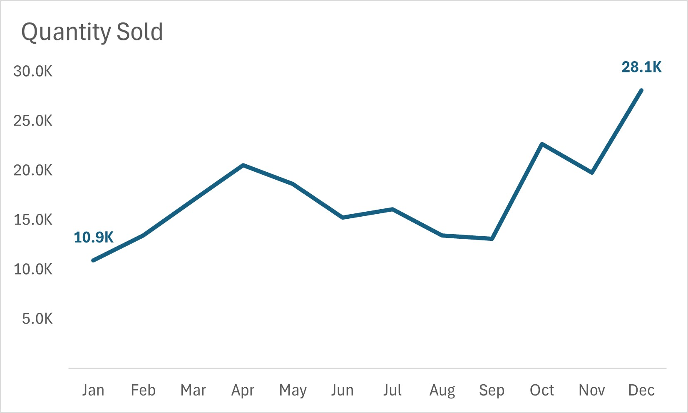We start basic. A line graph of units sold by month. Since this is a time-based metric (sales over months) a line graph is very appropriate. We immediately see some expected trends. Early in the year sales are softer than in the very busy Q4.
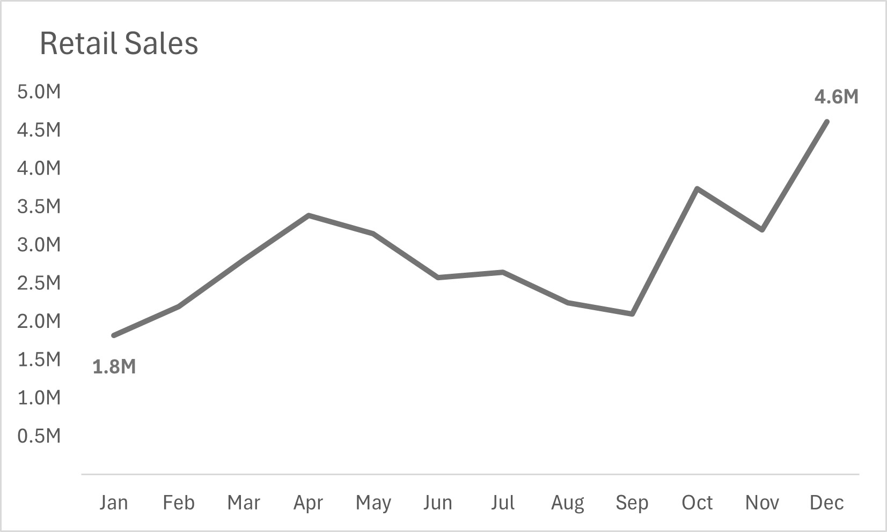A graph showcasing the retail dollars sold by month shows a very similar story. The total retail dollars sold by month appear to follow the same seasonality that units did.
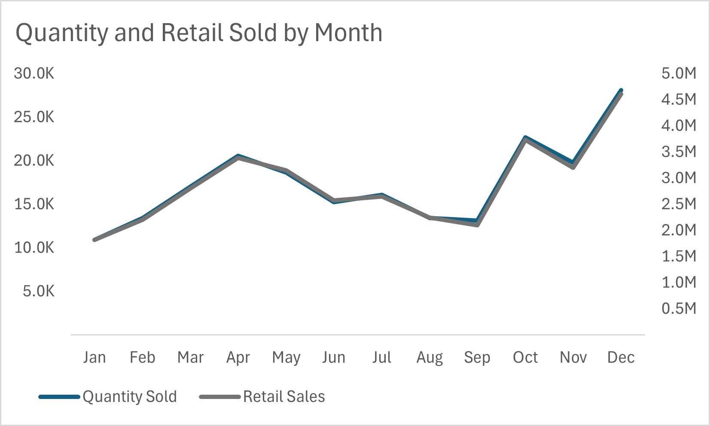If we overlay these two graphs we can see why they look so similar - they are nearly identical!
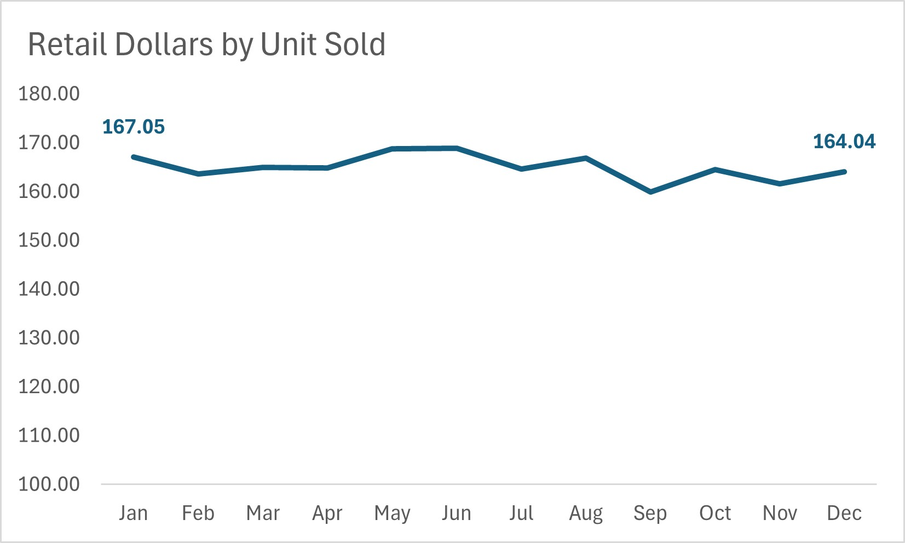Another way to view this is to calculate the Dollars Per Unit Sold. The Extremely limited variation in Retail Dollars by Unit Sold tells us the same story.
So far the data indicates seasonal sales, but that there is limited variation in the ratio between units sold and dollars generated. Limited variation does not mean Zero variation, and there is room for further analysis here. Next steps are to zoom in on product types.
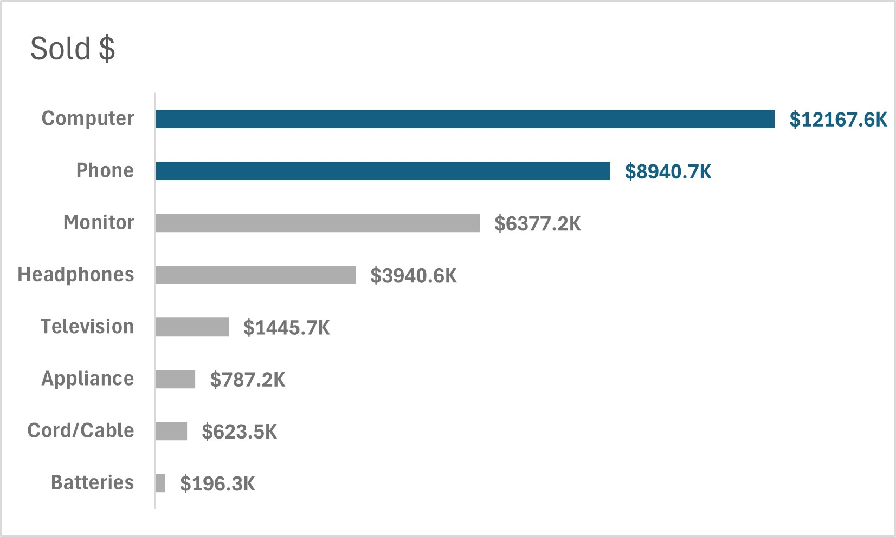Annual Retail Dollars by product type gives us a picture of our most lucrative items from a high level. Two winners, Computers and Phones, represent more than 60% of Retail Dollars.
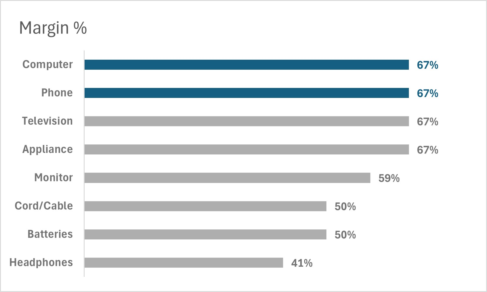If we look at the Margin % by product type we find that Computers and Phones are also among the most profitable items. For each $1 sold the company is keeping $0.67. When we consider that these are both the strongest cash generators AND the strongest retail sales categories it is an area of certain opportunity.
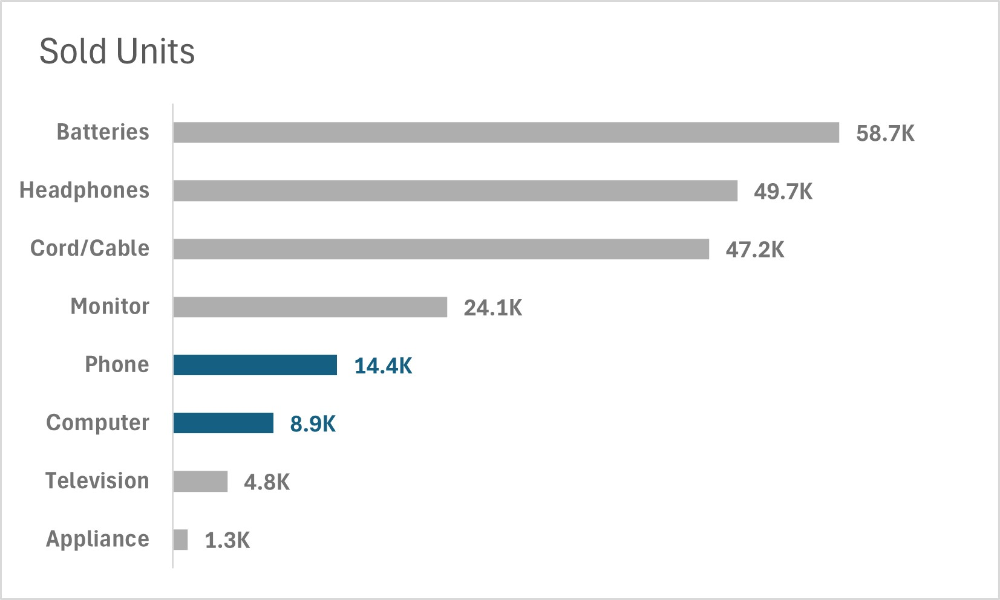Pivoting to Units Sold paints a new story. These high dollar earning products are amongst the lowest unit sales. Some quick napkin math would tell us that these are top ticket items, so despite low unit sales they are still the most profitable products.
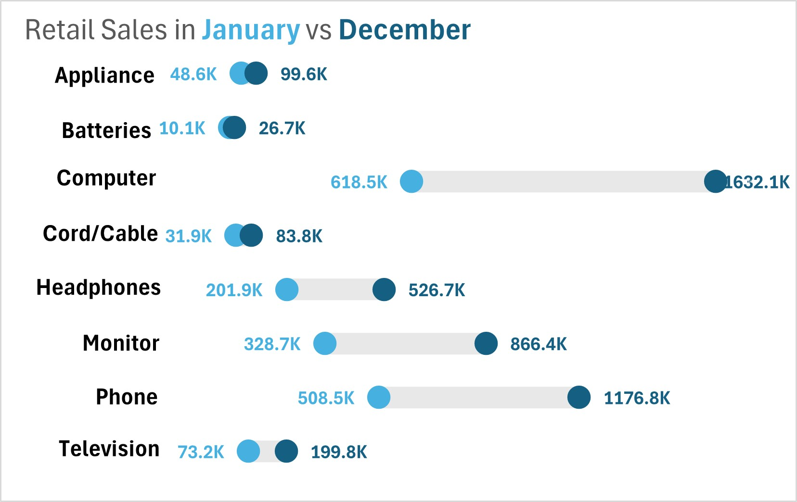Now to hunt for those opportunities. Plotting the retail sales by product category in January vs. December provides another view of category performance. Items with a small span but high unit sales like Batteries are going to be small dollar, high volume units. Appliances are also low volume and low dollar sales. They are high margin items, so there is good opportunity for added cash by turning just a few more units.
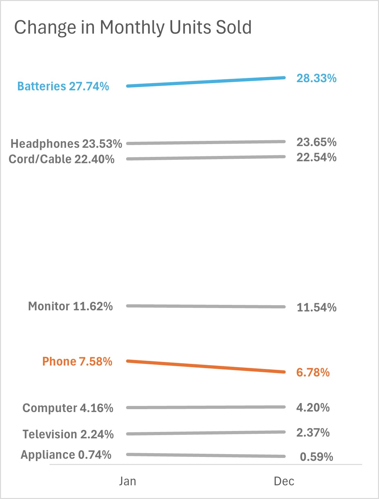A plot of the Overall Percent of Sales for each category provides a look at the product mix moving out the door during these two different sales seasons. Most items are essentially flat, with Batteries seeing a relative spike in volume. One other category stands out: Phones. Phones represent the second most profitable product type, but sees the largest decrease in relative sales of all product types during the busiest selling month of the year. Opportunity knocks.
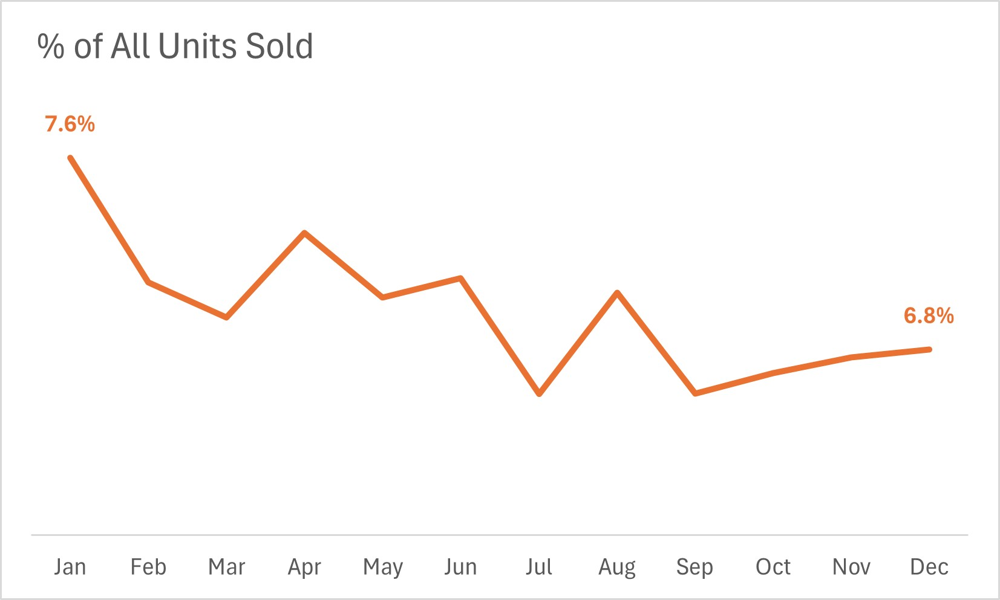Pulling on the loose thread from the January vs December view shows a negative trend. Phone sales as a percent of the overall units sold decreases throughout the year. There is money to be had in increasing sales here. January is both the best month for Phones by way of percent of units and also the worst month for sales in all other metrics. A reasonable goal would be to increase Phone sales to the same percent of overall unit business to January levels in all other months.
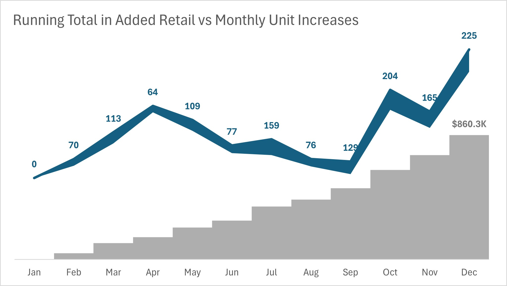After plotting the lift in unit sales should the company sell the same percentage of Phones in each month as it does in January, the monthly numbers appear to be humble. The largest current deficit is 225 units in December, the biggest selling month of the year. The opportunity is from the strength in margin and retail dollars that these units would generate. Increasing the Phone sales by month would generate an additional $860,000 in retail sales for the company.
Actionable Insights are developed from creative analysis. Looking at data in different ways, identifying potential opportunities, and exploring how to influence overall results from small changes can provide business users, leadership, and other stakeholders with better understanding of their business. This analysis is rarely finished at this point. From here the natural next steps would be to socialize or present findings to key stakeholders, then discuss future phases of analysis or the implementation of actions driven by these results.